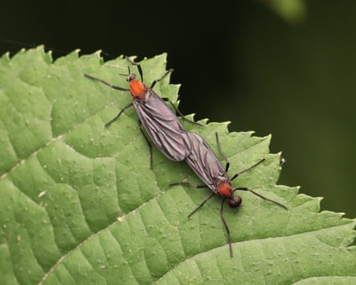

Seoul residents are grappling with an invasion of so-called “lovebugs” that have swarmed hiking trails and urban areas across the South Korean capital, with experts debating how to handle the infestations that are surging as the climate crisis draws them further north.
Viral footage shared on social media shows Gyeyangsan mountain in Incheon, west of Seoul, with hiking trails and observation decks carpeted black with the insects.
The bugs, officially called Plecia longiforceps , earned their nickname from their distinctive mating behaviour, flying attached as couples during copulation. Males die after three to four days, while females live about a week, laying hundreds of eggs in humid soil before dying.
Originally from subtropical regions of south-eastern China, Taiwan and Japan’s Ryukyu islands, the lovebugs were first scientifically identified in South Korea during a major 2022 outbreak.
Experts say the climate crisis and urban development around mountain habitats as well as rising temperatures are creating ideal conditions for their northward expansion into temperate zones, with Seoul’s urban heat-island effect making the city’s environment particularly attractive.
Complaints to city authorities have more than doubled from 4,418 in 2023 to 9,296 last year. Incheon received more than 100 reports in a single day this year.
The outbreak has triggered heated debate over pest control methods.
“They have a disgusting appearance but are actually beneficial insects,” Seoul authorities said in public announcements, warning that spraying chemical pesticides indiscriminately would kill “various other organisms” and harm humans. The flies pollinate flowers and their larvae enrich soil by decomposing organic matter.
A survey found 86% of Seoul residents consider lovebugs to be pests despite their ecological benefits.Photograph: Jonghwan Choi
The lovebugs themselves pose no direct threat to humans: they do not bite, transmit diseases or feed significantly as adults.
Instead, officials recommend water spraying to remove insects from surfaces, installing light traps and sticky pads around outdoor lighting, and wearing dark-coloured clothing when outdoors, as the insects are attracted to bright colours and lights.
Public patience is wearing thin, however. A Seoul Institute survey found 86% of residents consider lovebugs as pests despite their ecological benefits, ranking them the third most unpleasant insect after cockroaches and bedbugs.
Government researchers are reportedly developing fungal pesticides that target lovebug larvae while minimising ecosystem damage.
Natural population control is also emerging as birds, including magpies and sparrows, learn to eat the insects, causing numbers to drop in previously affected areas.
The lovebugs typically disappear by mid-July, as their brief adult lifespan means populations crash rapidly after about two weeks of intense activity.